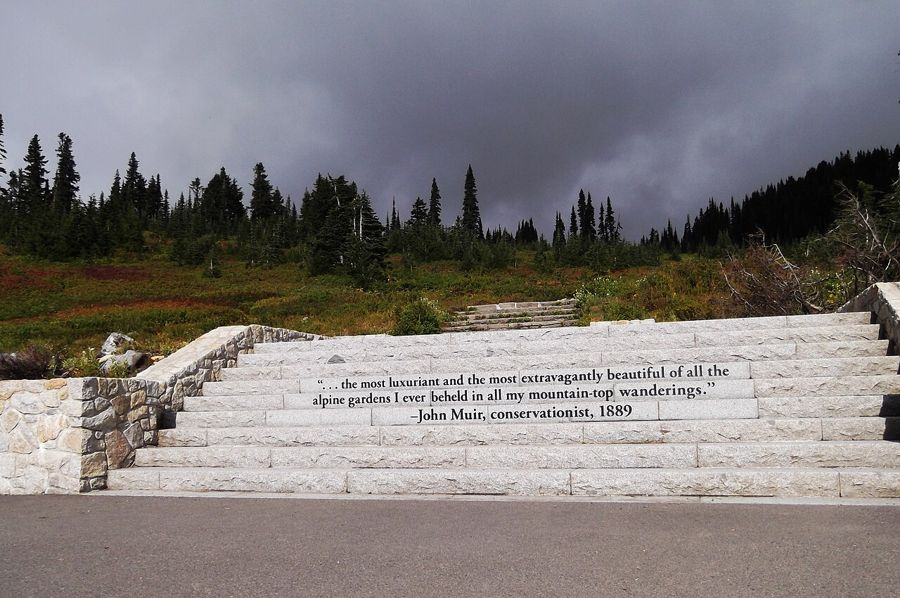
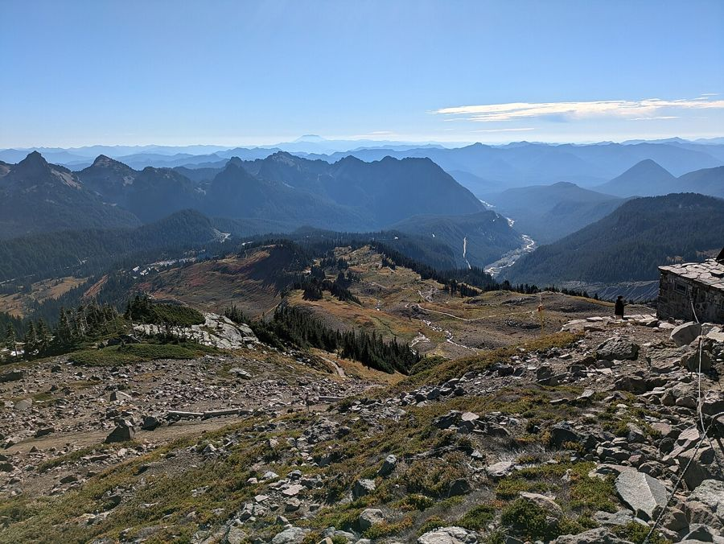
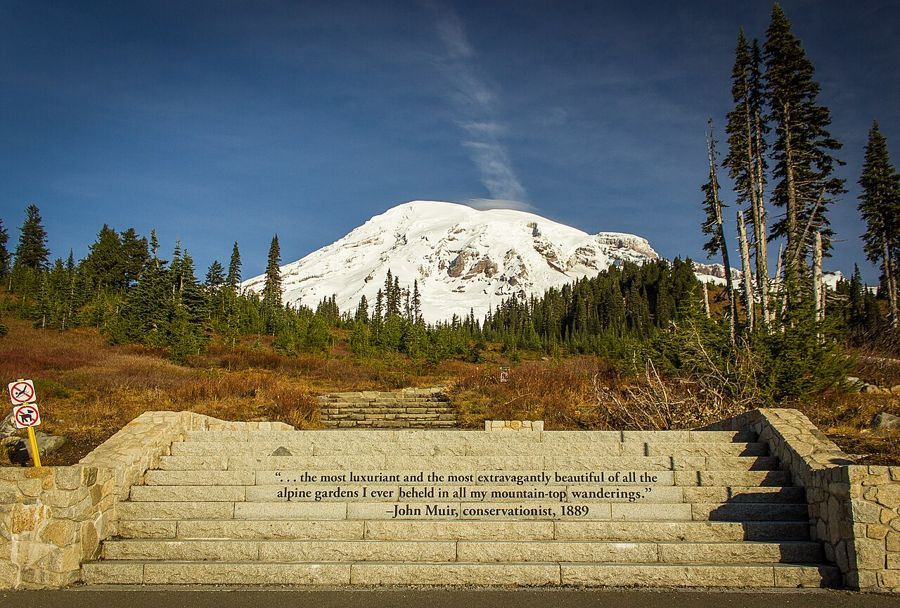

The loop starts at Paradise, around 5,400 feet up on the south side of Mount Rainier.
Photo: brewbooks from near Seattle, USA · CC BY-SA 2.0 · Wikimedia Commons

Near the high point of the loop the meadows of Paradise lie far below.
Photo: Buidhe · CC BY-SA 4.0 · Wikimedia Commons

The return branch brings you back to Paradise, with Mount Rainier ahead.
Photo: ThartmannWiki · CC BY-SA 4.0 · Wikimedia Commons